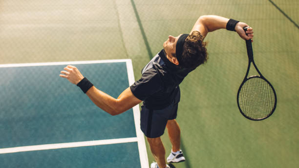

Blog de Esportes
Home |
Futebol |
Basquete |
Tênis
Tênis

O tênis é um esporte que exige técnica e resistência. Grandes torneios como Wimbledon e Roland Garros reúnem os melhores jogadores, como Roger Federer, Rafael Nadal e Novak Djokovic.
Fatos sobre Tênis
- O torneio de Wimbledon é o mais antigo do mundo, criado em 1877.
- Roger Federer é considerado o melhor jogador da história, com 20 títulos de Grand Slam.
- O tênis é jogado em diferentes superfícies: grama, saibro e piso duro.